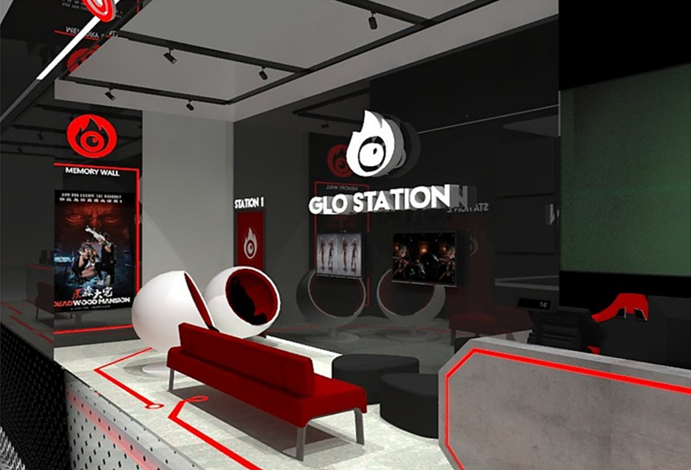
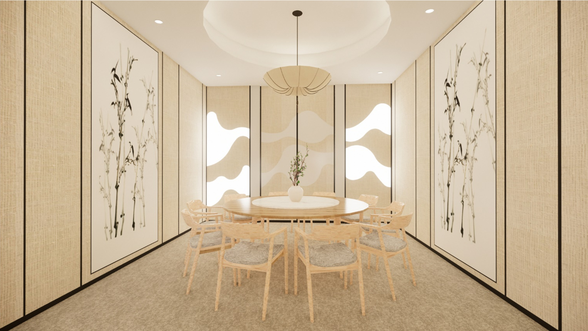
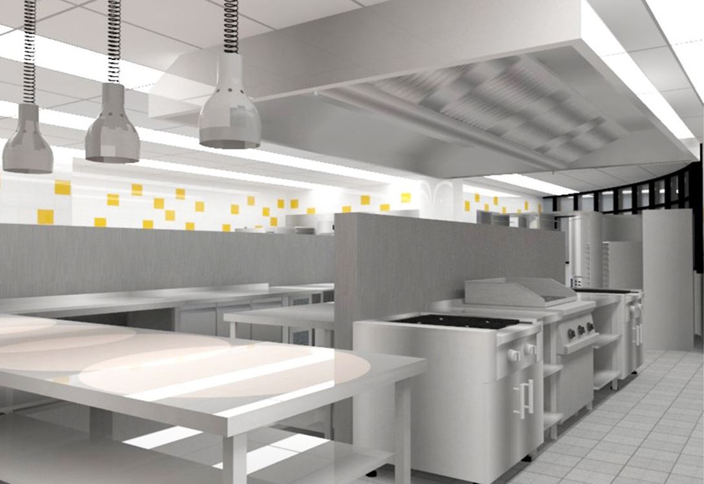
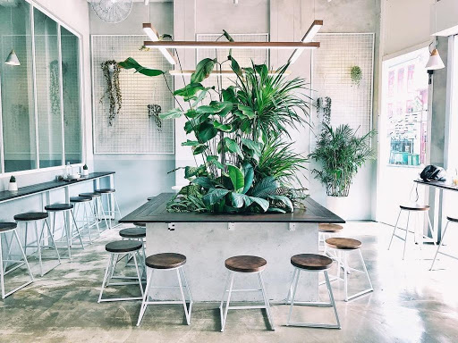
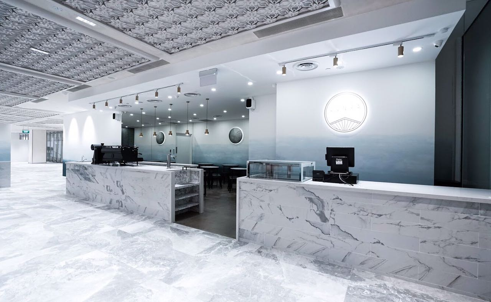
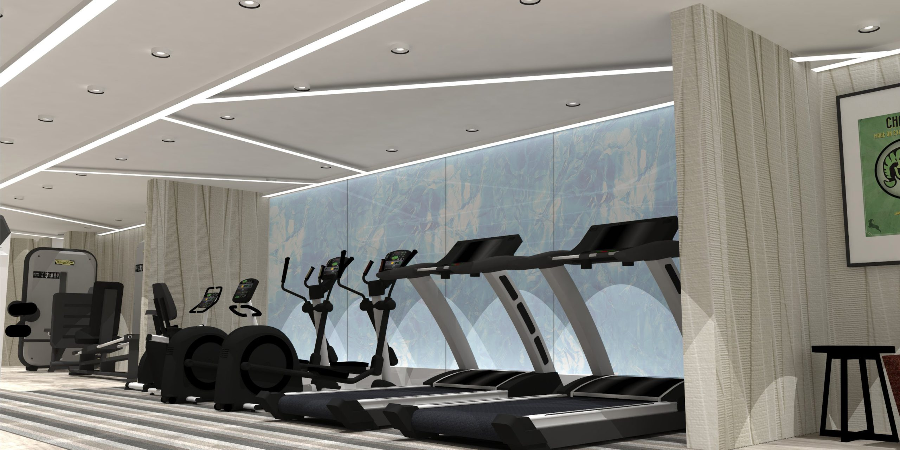
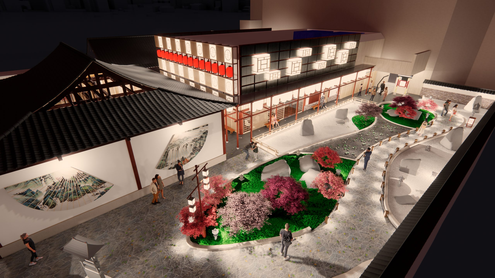

Commercial Projects

SandBox VR
As one of the few Virtual Reality game centres, Sandbox VR brings technology to life through design inspired by a circuit motherboard. Linear and angular elements shape the space, creating a futuristic atmosphere that mirrors the innovation behind its immersive gaming experiences.
Read more
MUVE Gym
Located in the heart of the CBD, MUVE Gym offers a sleek and professional setting designed for focus and performance. Outfitted with essential equipment and defined by dark, modern finishes, the space delivers a clean aesthetic that reflects both strength and discipline.
Read more
Vegitarian Restaurant
Inspired by mountains and clouds, this restaurant offers a dining experience that feels both serene and uplifting. Timber screens form a striking feature wall, creating a lenticular effect where mountain silhouettes appear as guests move through the space. Subtle cloud-like mists complete the atmosphere, immersing diners in the tranquility of nature.
Read more
Hotel Kitchen
A complete revamp of the hotel's commercial kitchen brings modern finishes and state-of-the-art equipment into a highly functional space. The redesigned Chef's office provides a more conducive environment for administrative work, while the entire kitchen has been upgraded to meet the latest fire safety standards and regulatory approvals.
Read more
Five Oars Coffee Brewers @ Tanjong Pagar Road
At Five Oars Coffee Roasters, the charm of Melbourne's café culture is reimagined through an industrial, unfinished look balanced with lush, unkempt plants. The signature communal planter seating not only anchors the design but also reflects the café's values, creating a space to connect, unwind, and enjoy together.
Read more
Lunar Coffee Brewers
At Lunar Coffee Brewers, modern design meets a sense of calm in the heart of the CBD. Marble and brass details bring a touch of sophistication, while hand-painted walls in soft blue shades reflect the beauty of the sea and sky. The result is a café that feels both stylish and relaxing, offering a welcome pause from the city's busy rhythm.
Read more
Commercial Gymnasium @ Farrer Road, Singapore
Explore two distinct concepts for this private gym: one exudes sleekness with cool tones and linear textures, while the other boasts a warm, vibrant ambiance with green turfing reminiscent of the outdoors.
Read more
The Shilla Duty-Free @ Changi Airports
At The Shilla Duty-Free in Changi Airport, elegance reigns supreme as the design seamlessly embodies the essence of the Shilla brand. With meticulous attention to both form and function, the potential of its strategic location within one of the world's finest airports is maximised, ensuring an unparalleled experience for travellers.
Read more
Rooftop Japanese Restaurant Garden @ Middle Road
Experience the charm of our Rooftop Japanese Garden & Restaurant at Middle Road, a one-of-a-kind boutique destination nestled on the 6th Storey Rooftop Podium. Our design proposal incorporates two Michelin-standard restaurants, enveloped by a serene Japanese Sand & Stone Garden, transporting guests to the enchanting world of traditional Japanese setting from the Edo Period.
Read more